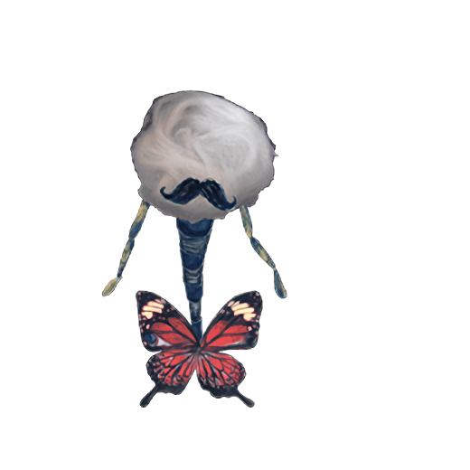
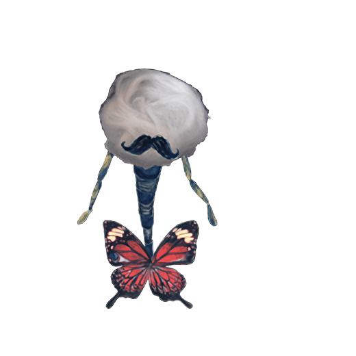
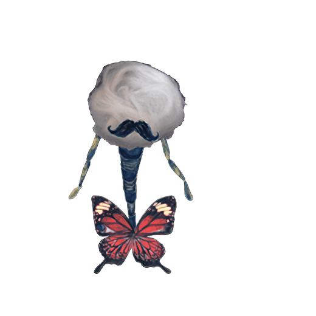

"Madoka Magica", también conocido como "Puella Magi Madoka Magica", es un anime que ha dejado una profunda impresión en la comunidad de aficionados, y para mí, representa algo aún más significativo. Este anime, con su innovadora narrativa y su exploración de temas oscuros, ha resonado en mi vida personal de manera muy especial. En este ensayo, exploraré por qué "Madoka Magica" se ha convertido en mi anime favorito, analizando su relación con mi pasado y vivencias, la influencia de su soundtrack en mi identidad.
"Madoka Magica" es más que un simple anime para mí; es una experiencia emocional que ha tocado fibras profundas de mi ser. La historia de Madoka Kaname y sus amigas mágicas se entrelaza con temas de esperanza, desesperación y sacrificio. Estos temas resuenan especialmente debido a mis experiencias personales con una amiga cercana. En momentos de incertidumbre y dificultad, las decisiones difíciles y los sacrificios, tal como se presentan en el anime, han sido ecos en mi vida real.
Recuerdo claramente cómo, durante una etapa complicada, mi amiga y yo encontrábamos consuelo y comprensión en la narrativa de "Madoka Magica". Las decisiones que enfrentaban las protagonistas, la carga de las elecciones y la lucha interna por mantener la esperanza en medio de la desesperación se reflejaban en nuestras propias vidas. La conexión con el anime no solo me permitió entender mejor mis propios sentimientos, sino también fortalecer mi relación con ella. Las conversaciones profundas que tuvimos sobre el anime nos ayudaron a explorar nuestros propios miedos y deseos, creando un vínculo aún más fuerte entre nosotras.
El soundtrack de "Madoka Magica", compuesto por Yuki Kajiura, es una pieza clave que acentúa la atmósfera emocional del anime. Cada melodía no solo acompaña la narrativa, sino que también evoca emociones intensas que son muy personales para mí. Las composiciones de Kajiura tienen una cualidad etérea y melancólica que parece capturar la esencia de mis propios sentimientos y recuerdos.
La música de "Madoka Magica" no solo me transporta al mundo del anime, sino que también actúa como un reflejo de mi propia vida emocional. En momentos de reflexión o melancolía, encontrarme con estas melodías me permite conectar con partes de mí misma que, a veces, se sienten incomprendidas. El soundtrack se convierte en una banda sonora de mi vida, recordándome a mí misma y mis propias batallas internas, así como los momentos de esperanza y resiliencia que he experimentado.
El análisis de Jaime Altozano ofrece una perspectiva profunda sobre la estructura narrativa y los elementos psicológicos de "Madoka Magica". Altozano destaca cómo el anime juega con las expectativas del espectador, subvirtiendo el género de chicas mágicas de manera innovadora. Según Altozano, "Madoka Magica" explora temas de manera compleja y multifacética, abordando la desesperación y el sacrificio con una profundidad psicológica que es rara en el anime de este tipo.
Uno de los puntos más interesantes del análisis es cómo el anime usa el simbolismo y la narrativa no lineal para profundizar en el estado mental de los personajes. Las brujas y los laberintos en los que se encuentran reflejan los laberintos psicológicos internos de las protagonistas. Este enfoque se alinea con el sentimiento de estar atrapado en una encrucijada emocional, algo que también he sentido en mi vida personal. El diseño de las brujas y sus mundos laberínticos sirve como una metáfora visual de las luchas internas y los conflictos emocionales, creando una experiencia que es tanto inquietante como profundamente resonante.
"Madoka Magica" es un anime que no solo entretiene, sino que también ofrece una reflexión profunda sobre la naturaleza humana y las decisiones difíciles. A través de su narrativa emocional, su impactante soundtrack y el análisis crítico de Jaime Altozano, he encontrado una conexión personal profunda con la serie. Mis propias experiencias y la influencia del soundtrack en mi vida diaria refuerzan el porqué de mi amor por este anime. Al explorar los temas de esperanza, desesperación y sacrificio, "Madoka Magica" me ha ofrecido una perspectiva valiosa sobre mis propias luchas y me ha ayudado a comprender mejor mis emociones y relaciones. Es una obra que, más allá de su trama, se convierte en un espejo que refleja la complejidad de la experiencia humana.
